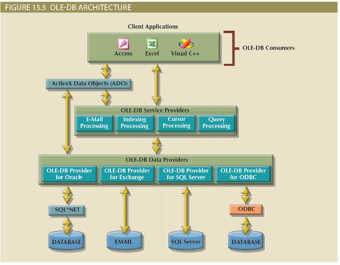

Database Connectivity and Web Technologies
Database Connectivity and Web Technologies
Objectives
Explain the purpose of standard database connectivity interfaces
Describe the functionality and features of various database connectivity technologies: ODBC, OLE, ADO.NET, and JDBC
Describe how web-to-database middleware is used to integrate databases with the Internet
Identify the services provided by web application servers
Explain how Extensible Markup Language (XML) is used for web database development
Describe the advantages and disadvantages of using cloud computing for the database-as-a-service model
Database Connectivity
Mechanisms through which application programs connect and communicate with data repositories
Database middleware: provides an interface between the application program and the database
Data repository: data management application used to store data generated by an application program
Universal Data Access (UDA): collection of technologies used to access any type of data source and manage the data through a common interface
ODBC, OLE-DB, and ADO.NET form the backbone of MS UDA architecture
Native SQL Connectivity
Connection interface provided by database vendors, which is unique to each vendor
Interfaces are optimized for particular vendor’s DBMS
Maintenance is a burden for the programmer
ODBC, DAO, and RDO
Open Database Connectivity (ODBC): Microsoft’s implementation of a superset of SQL Access Group Call Level Interface (CLI) standard for database access
Widely supported database connectivity interface
Allows Windows application to access relational data sources by using SQL via standard application programming interface (API)
Data Access Objects (DAO): object-oriented API used to access desktop databases such as MS Access and FileMaker Pro
Provides an optimized interface that expose functionality of Jet data engine to programmers
Remote Data Objects (RDO): higher-level object-oriented application interface used to access remote database servers
Optimized to deal with server-based databases
Dynamic-link libraries (DLLs): implements ODBC, DAO, and RDO as shared code that is dynamically linked to the Windows operating environment
Components of ODBC architecture
High-level ODBC API through which application programs access ODBC functionality
Driver manager that is in charge of managing all database connections
ODBC driver that communicates directly to DBMS
OLE-DB
Object Linking and Embedding for Database (OLE-DB)
Database middleware that adds object-oriented functionality for access to relational and nonrelational data
Series of COM objects provides low-level database connectivity for applications
Types of objects based on functionality
Consumers: applications or processes
Providers: data or service
Does not provide support for scripting languages
ActiveX Data Objects (ADO) provide:
High-level application-oriented interface to interact with OLE-DB, DAO, and RDO
Unified interface to access data from any programming language that uses the underlying OLE-DB objects

ADO.NET
Data access component of Microsoft’s .NET application development framework
Microsoft’s .NET framework
Component-based platform for developing distributed, heterogeneous, interoperable applications
Manipulates any type of data using any combination of network, operating system, and programming language
Extends and enhances functionality critical for the development of distributed applications
DataSet: disconnected memory-resident representation of the database
Contains tables, columns, rows, relationships and constraints
Internally stored in XML format
Data in DataSet is made persistent as XML documents
Java Database Connectivity (JDBC)
Application programming interface that allows a Java program to interact with a wide range of data sources
Advantages of JDBC
Company can leverage existing technology and personnel training
Direct access to database server or access via database middleware
Programmers can use their SQL skills to manipulate the data in the company’s databases
Provides a way to connect to databases through an ODBC driver
Database Internet Connectivity
Allows new innovative services
Permit rapid response by bringing new services and products to market quickly
Increase customer satisfaction through creation of innovative data services
Allow anywhere, anytime data access using mobile smart devices via the Internet
Yield fast and effective information dissemination through universal access
Web-to-Database Middleware
Web server is the main hub through which Internet services are accessed
Server-side extension: program that interacts directly with the web server
Provides services to the web server in a way that is totally transparent to the client browser
Known as web-to-database middleware
Web Server Interfaces
Currently, there are two well-defined web server interfaces
Common Gateway Interface (CGI): uses script files that perform specific functions based on the client’s parameters that are passed to the web server
Application programming interface (API): implemented as shared code or as dynamic-link libraries; treated as part of the web server program that is dynamically invoked when needed
The Web Browser
Software that lets users navigate the web from their client computer
Interprets HTML code received from web server
Presents different page components in standard way
Web is a stateless system
Web server does not know the status of any clients
Client-Side Extensions
Add functionality to Web browser
Plug-in: external application automatically invoked by the browser when needed
Java and JavaScript: embedded in web page
Downloaded with the Web page and activated by an event
ActiveX and VBScript: embedded in web page
Downloaded with page and activated by event
Oriented to Windows applications
Web Application Servers
Middleware application that expands the functionality of web servers by linking them to a wide range of services
Connects to and query database from web page
Presents database data in a webpage using various formats
Creates dynamic web search pages
Creates webpages to insert, update, and delete data
Enforces referential integrity
Uses simple and nested queries and program logic to represent business rules
Web application server features
Integrated development environment
Security and user authentication
Computational languages
Automation generation of HTML pages
Performance and fault -tolerant features
Database access with transaction management capabilities
Access to multiple services
Web Database Development
Process of interfacing databases with the web browser
How to create webpages that access data in a database
Code examples
Extensible Markup Language (XML)
Meta-language used to represent and manipulate data elements
Facilitates the exchange of structured documents over the Internet
Allows definition of new tags
Case sensitive
Must be well-formed and properly nested
Indicates comments with <- and ->
XML and xml prefixes reserved for XML only
Document Type Definitions (DTD) and XML Schemas (XSD)
DTDs
File with .dtd extension that describe XML elements
Provides composition of database’s logical model
Defines the syntax rules or valid tags for each type of XML document
Companies engaging in e-commerce transaction must develop and share DTDs
DTD referenced from inside XML document
XML schemas (XSDs)
Advanced data definition language
Describes the structure of XML data documents
More closely maps to database terminology and features
XML schema definition (XSD) file uses syntax similar to XML document
Extensible Stylesheet Language (XSL) for Presentation
XML separates data structure from presentation and processing
Extensible Style Language (XSL) displays XML data
Defines the rules by which XML data are formatted and displayed
Parts:
Extensible Style Language Transformations (XSLT)
XSL style sheets
Applications of XML
Several applications lend themselves particularly well to XML
B2B exchanges
Legacy systems integration
Web page development
Database support
Database meta-dictionaries
XML databases
XML services
Cloud Computing Services
Computing model that enables access to a shared pool of configurable computer resources
Can be rapidly provisioned and released with minimal management effort or service provider interaction
Potential to become a game changer; eliminates financial and technological barriers
Cloud Implementation Types
Public cloud
Built by a third-party organization to sell cloud services to the general public
Private cloud
Built by an organization for the sole purpose of servicing its own needs
Community cloud
Built by and for a specific group of organizations that share a common trade
Characteristics of Cloud Services
Cloud computing services share a set of guiding principles
Ubiquitous access via Internet technologies
Shared infrastructure
Lower costs and variable pricing
Flexible and scalable services
Dynamic provisioning
Service orientation
Managed operations
SQL Data Services
Cloud computing-based data management service
Provides relational data management to companies
Hosted data management and standard protocols
Standard protocols
Common programming interface
Advantages
Reliable and scalable at a lower cost than in-house systems
High level of failure tolerance
Dynamic and automatic load balancing
Automated data backup and disaster recovery are included
Dynamic creation and allocation of processes and storage
{kind=link}
{kind=link}

{kind=link}
{kind=link}
{kind=link}
{kind=link}
{kind=link}
{kind=link}